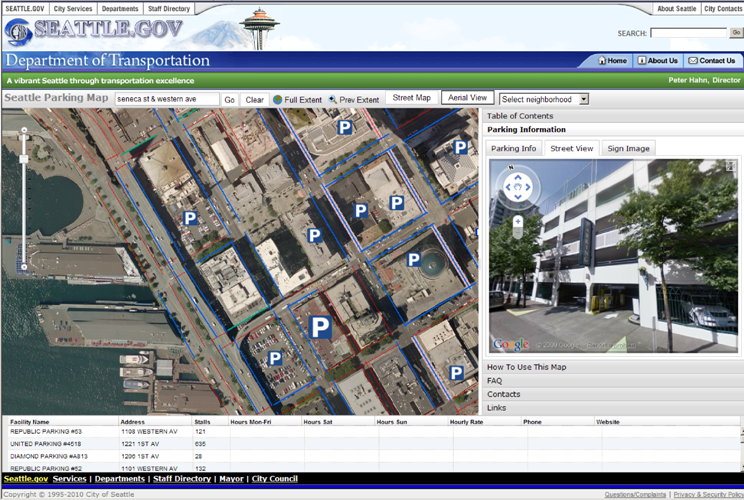
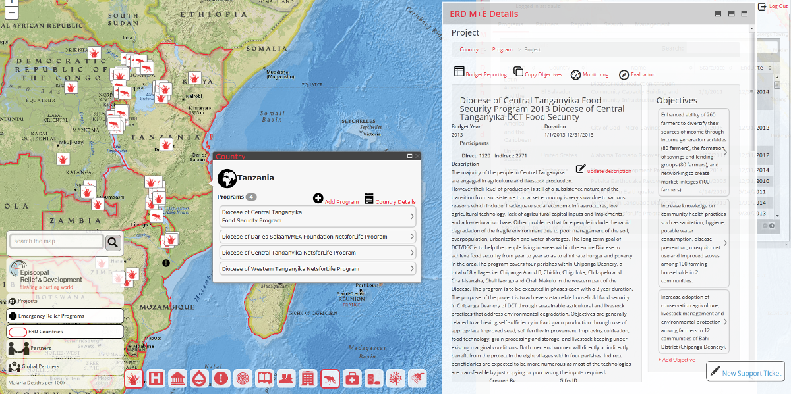
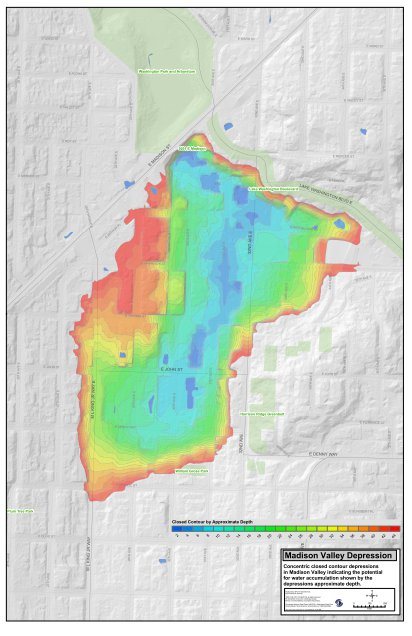

Bright Rain Solutions is a Geographic Information Systems (GIS) consulting
firm specializing in innovative spatial solutions providing GIS web and desktop application development
and systems integration services.
Clients include government agencies, non-profit organizations and private businesses.
Core Technologies
Web
HTML 5
|CSS3
|ArcGIS JS API
|Leaflet
|Vue.js
|Node.js
|JSON
|REST
Coding
Javascript
|C#
|Python
GIS
ArcGIS Desktop
|ArcGIS Server
|QGIS
|Mapbox Studio
Data
MS SQL Server
|PostgreSQL\PostGIS
Environmental Protection Agency (EPA)
Bright Rain provides development and consultation services to the EPA in support of mapping the results of the
Clean Watersheds Needs Survey (CWNS). Services include the development of a custom web mapping application in conjunction with an application developed and hosted within the EPA GeoPlatform.
This work is being conducted as a sub-contractor to
IndraSoft
City of Seattle | Seattle Department of Transportation
Development of two web map applications using ArcGIS JavaScript API: A Parking Locator map application designed to provide real-time information regarding parking options for the public within the City. A Construction Coordination map application designed to provide the public information about planned construction projects and events within the City.
City of Seattle | Seattle Public Utilities
Development of a custom set of GIS analysis tools to identify potential flood polygons within the City of Seattle based on closed contours.
Enhancements to existing, custom GIS data editors.
Development of custom functions to convert cadastral data previously maintained as ArcInfo coverages to true curves offered in the new ArcSDE geodatabase.
Antares Group, Landover, MD
Map interface development of a web based contract management tool that facilitates the management of contractual obligations between crop producers
and biomass processors. The front end technology uses the Leaflet mapping JavaScript library
to present the user with an aerial base map along with a tile layer created with TileMill and hosted with
MapBox that shows critical areas and labels.
The user can interact with fields, storage and access locations managed as vector graphics as well as enter and search associated tabular data.
The interface interacts with a backend api exposed via the ASP.Net MVC framework.
PACE Engineers, Seattle, WA
Implemented GIS at several water and sewer utility districts including the development of custom applications in support of asset inventory with GPS, development of asset management systems using ESRI software, integration between legacy database systems and GIS, and creation of network models. Implementation of GIS based maintenance management systems.
Your Castle Real Estate Services, Denver, CO
Development of desktop and web based real estate tools that support the company goal of offering innovative solutions to member agents.
US Forest Service | Mt. Baker / Snoqualmie National Forest, WA
Assessed dispersed recreation impact on fish populations in riparian areas. Geographic analysis included identifying high impact sites and high impact area using raster analysis.
Colorado State Parks
Instrumental in completing a comprehensive survey study. Roles included: mapping visitor distribution, data collection, data analysis and reporting. The results of which led to the publication of Colorado State Park's 1998 Visitation Study Report.
Trail Use Distribution Study at Castlewood Canyon State Park using ArcView 3.2.
EPA CWNS Mapper
The EPA CWNS Mapper is a web map application that displays need amounts for every wastewater facility in the US as well as aggregated needs amounts at the state, county and congressional district level. The application is being developed using the esri-leaflet map library.
Seattle Parking Map

The Seattle Parking Map is an interactive web map application that provides
reliable parking information for the citizens and visitors to the city of Seattle.
It was developed using the ArcGIS JavaScript API that consumes ArcGIS Server map services
through a REST interface.
{kind=link}
ERD M+E

The Episcopal Relief & Development Monitoring and Evaluation Program Management System is a web based
map application that supports international and domestic aid programs from project budgeting to monitoring the progress of program efforts through final evaluation of the effectiveness of program and project activities.
{kind=link}
Seattle Flood Prone Area Analysis

Programming and analysis was conducted for Seattle Public Utilities to identify closed contours that
represent potential flood areas within the City. A custom analysis model was built using ArcObjects
that identified all closed contours within the city limits and analyzed them for potential flooding.
{kind=link}
blog.brightrain.com
Most recent entries:-
1 March 2016
Outdoorsy Nerds: Recreation Facilities Map using RIDB API
 Come git it outdoorsy nerds! Recreation facilities for all (developers)!
Come git it outdoorsy nerds! Recreation facilities for all (developers)!
-
11 Feb 2015
Map Autocomplete
 Autocomplete multi-source Search with ArcGIS REST services
Autocomplete multi-source Search with ArcGIS REST services
-
4 Apr 2014
Togglability
 Turning map layers on and off, with flatness
Turning map layers on and off, with flatness
-
13 Mar 2014
Geoconverter Update
 Updated geoconverter: { geojson } <> { arcjson }
Updated geoconverter: { geojson } <> { arcjson }
-
14 Aug 2013
Geoconverter
 Convert: geoJson > arcJson
Convert: geoJson > arcJson
-
6 Dec 2012
Mapbox Satellite v NAIP
 Side by Side: NAIP WMS | MapBox Satellite
Side by Side: NAIP WMS | MapBox Satellite
-
8 Nov 2012
Fulcrum < > ArcGIS
ArcGIS Fulcrum Add In (open source and downloadable) -
11 Oct 2012
A Freelancers Plea to Recruiters
4 Elements of a Fair and Viable Recruiter\Freelancer Business Model -
14 Aug 2012
Updating an ArcGIS Online Feature Service
Automate Updating an ArcGIS Online Feature Service
Bright Rain Solutions is owned and operated by David Puckett. David has more than 15 years of GIS experience
and holds a Bachelor of Arts degree in Sociology and Geography from Colorado State University
and earned GIS Certification from the University of Washington.
Bright Rain Solutions is a member of the
Esri Developer Network
We are located on Old Town Square in beautiful Fort Collins, Colorado
19 Old Town Square
238
Fort Collins, CO 80524